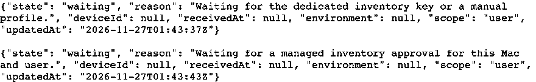

Private Mac preview · 0.5.2 build 3
Enroll an approved Mac account in Fleet
The private Apple silicon preview requires macOS 26 or later. A Fleet administrator can approve one Mac and one local account through device management (MDM). Once installed, the standalone inventory reporter checks in automatically when the assignment and its matching private signer arrive. A new installation appears in Fleet after its first accepted check-in.
For installation, choose the notarized Developer ID archive from the private release. Apple accepted build 3, and Gatekeeper verified its stapled ticket for Orbitus Robotics (team 975CAGD5EW). An ad-hoc, unnotarized archive of build 3 is available separately for comparison. Check the file size and SHA-256 for your chosen ZIP.
1. Assign the Mac and account
Have your Fleet administrator register an inventory signer in the intended CloudKit environment and grant its owner the FleetInventoryReporter role. Use a distinct registered signer per approval. This role can create, read and update status records across the Fleet.
Generate the public assignment with make_enrollment_profile.py from the private release or source checkout. Deploy the generated system-scoped profile to the approved Mac through MDM. It sets a forced InventoryEnrollment dictionary in the domain com.orbitusrobotics.redagent.inventory.enrollment.
- Fleet configuration
version(1),purpose(inventory),container(iCloud.orbitusrobotics.ViperFleet),environmentandkeyIDidentify the reporting destination and signer.- Approval
platformUUIDidentifies the approved Mac andaccountUUIDits local account.publicKeySHA256is the SHA-256 fingerprint of the registered public key’s DER SubjectPublicKeyInfo.
Keep one active managed assignment per Mac. Before designating another account, remove or replace the previous assignment in MDM. The installed management app also has one owner.
Read the account identifiers and generate the public assignment
On the approved Mac, sign in to the intended account. In Terminal, from the directory containing the extracted installer app, run the identity lookup.
"./RedAgent Inventory Installer.app/Contents/Resources/Runtime/InventoryEnrollmentPolicy" --identifiersIn the private source checkout, supply the two reported UUIDs, the registered key ID and its P-256 public PEM. This example uses the development environment and writes a new file for MDM.
python3 RedAgent/macos_inventory/make_enrollment_profile.py \
--platform-uuid "$PLATFORM_UUID" --account-uuid "$ACCOUNT_UUID" \
--environment development --key-id "$REGISTERED_KEY_ID" \
--public-key inventory-public.pem --output MacInventory.mobileconfig2. Deliver the signer privately
Through your private provisioning channel, place inventory-key.pem in ~/Library/Application Support/Orbitus/RedAgent Inventory/inventory/ for the reporting user. The user owns the folder and key, with permissions 0700 and 0600 respectively. Keep the private key out of the downloadable installer and the public assignment.
3. Install and verify the first report
From the approved account, open RedAgent Inventory Installer.app and click Install for This User. A managed assignment can arrive after installation. An existing manual profile.json takes precedence. Ask the administrator to correct it if the reporter rejects it. Click Show Status to check whether the reporter is waiting or a report has been accepted. Under Waiting for inventory provisioning., the reporter identifies the missing dedicated key or managed approval.
Look for the first Last accepted by Fleet timestamp, then confirm the matching record in Fleet. After an upgrade, look for a receipt newer than this assignment. If a new receipt is missing, ask the administrator to check the managed assignment, signer, account and CloudKit environment. The inventory guide describes the report contents and login lifecycle.

4. Withdraw approval
Choose Uninstall to stop this user’s reporter. The Fleet administrator can remove the MDM assignment and revoke that signer in CloudKit to withdraw access. Previously accepted reports keep their saved receipt.